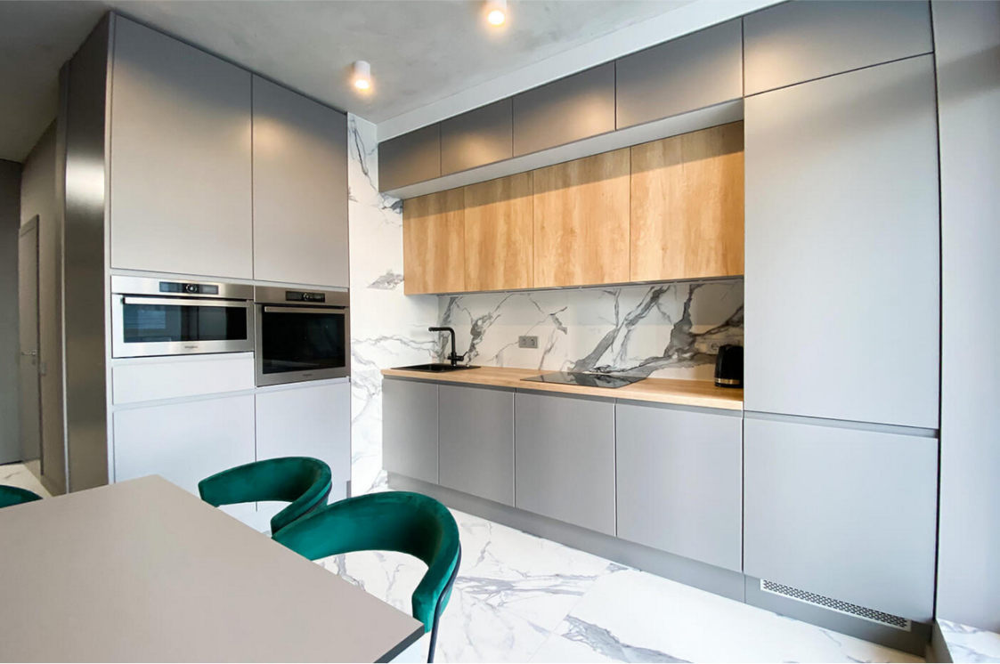

ELEGRUM HOME · Санкт-ПетербургКухня.
Кухня.
С вашим характером.
Проектируем мебель по индивидуальным размерам в Санкт-Петербурге. Кухни, шкафы и гардеробы под ваше помещение.
Рассчитать мою кухню
ПРИМЕРЫ РЕШЕНИЙСначала кухня.
Сначала кухня.
Потом детали.
Планировка, фасады и наполнение определяют, как вы будете пользоваться мебелью. Обсудим помещение, технику и материалы, чтобы подготовить ваш проект.
Заказать дизайн-проект